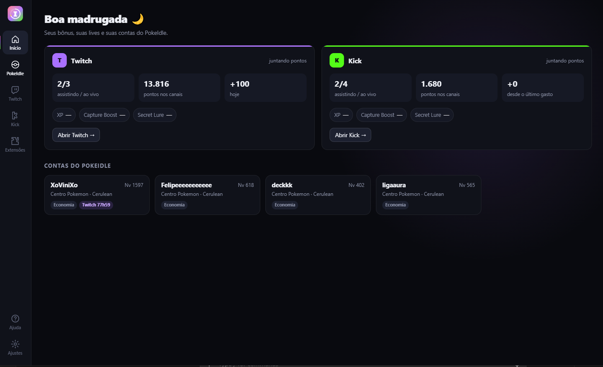

Contas do PokeIdle
Até 4 contas (a regra do jogo), cada uma com o login separado. Ver as ALTs juntas, lado a lado, zoom por conta e modo foco (F11).
Suas contas do jogo, os pontos da Twitch e os da Kick juntos e leves. E agora com análises de hunt, shiny, Outland e PvP feitas com os números do próprio jogo. No PC e no celular.
Grátis e de código aberto · Windows 10/11, Linux 64 bits ou Android 8+ · Atualiza sozinho · Versões do PC · Versões do Android

Até 4 contas (a regra do jogo), cada uma com o login separado. Ver as ALTs juntas, lado a lado, zoom por conta e modo foco (F11).
Cena, Otimizado, Economia ou ULTRA, por conta. "ULTRA automático no fundo", congelar ALTs e otimizar a memória sozinho.
Farm de cada conta, XP/h, previsão de shiny, bônus acabando, voto do TopIdle e o seu Market (anúncios e vendas).
Lives em segundo plano, preço real dos bônus de cada canal, pacotes de 1 h a 10 h e o baú pego sozinho.
Lives em segundo plano, foco no próximo bônus, pacotes de 1 h a 10 h e prioridade para subs.
Streamer que entra no PokeIdle entra no app sozinho. O tempo dos seus bônus vem direto do jogo, conta por conta.
O app lê as Novidades do jogo (o "!") e os números que ele usa. Quando o PokeIdle atualiza, avisa o que mudou e já usa os valores novos.
Diário de horas e XP, relatório da noite, avisos no celular (ntfy ou Discord) e painel pelo Wi-Fi de casa.
Overlay leve para o OBS com nível, barra de XP, XP na live e animação de shiny e de nível.
Seus anúncios do Market postados no canal de comércio da guild no Discord, com a ficha do pokémon e o link "Abrir no Idleterino".
Rotom Sniper e /hunt já reconhecidos, e qualquer extensão (.zip, .crx ou pasta). Só nas contas do PokeIdle.
As dúvidas mais comuns com busca. Backup automático das configurações e "voltar de versão" se algo der errado.
Hunts, tipos, evoluções, Megas, casas e bosses lidos do próprio PokeIdle, pela conta que você escolher.
A melhor hunt para o seu pokémon em campo (×5,5, ×2,5, AoE, bike e Dia Sazonal) e as que abrem nos próximos níveis.
Quem mata mais rápido (ataque, SP-ataque e velocidade), a hunt onde cada um se pega e 🔒 no que a sua conta ainda não alcança.
"Fico na Outland, vou atrás de shiny ou upo?": simula 7 e 30 dias e responde qual rende mais.
Com os IVs do seu pokémon, qual evolução e qual Mega valem mais no PvE e no PvP.
As espécies mais fáceis de pegar shiny com os seus bônus, quanto tempo leva e quanto vale no Market.
Quanto cada casa rende de XP, com os seus buffs, e quando cada pokémon chega no nível que você quer.
Lucro de cada boss com os preços de agora no Market e qual compensa mais.
Com o seu orçamento, o que está à venda agora que mais rende na sua região.
Compare hunts com o tempo medido de verdade e veja qual dá mais XP e ouro.
Os times do top 50 lidos do jogo todo dia, arquétipos com tier e tendência, e o meta real pelo seu elo.
A tier do PvP, os pokémon mais usados do meta e os counters deles, pela tabela de tipos do jogo.
Seu time contra cada time do top, com a luta simulada no tabuleiro real e cada um na fileira da distância dele.
O replay de cada partida resumido: quem bateu em quem, quem caiu e por quê.
Quem do seu time vale trocar e o que comprar no Market com o seu orçamento para subir.
Sua pontuação e o seu elo ao longo dos dias.
O Idleterino para Android farma o PokeIdle no celular, com as mesmas contas do PC.
Android 8 ou mais novo. O app não está na Play Store: baixe só por aqui ou pelo GitHub oficial.
Medimos cada modo do PokeIdle numa conta real. O ULTRA gastou cerca de 30% menos memória e quase nada de CPU, e a conta continua caçando.
| Modo do jogo | Memória | CPU |
|---|---|---|
| Cena ligada | 543 MB | ~20% |
| Otimizado | 612 MB | ~24% |
| Economia | 592 MB | ~21% |
| ULTRA ★ | 383 MB | < 1% |
chmod +x). Se não abrir, instale o libfuse2.Algum antivírus reclamou? Como o app ainda não tem assinatura digital, alguns antivírus desconfiam de programas novos. Baixe só por este site ou pelo GitHub, e se o antivírus mandar para a quarentena, restaure e adicione a pasta do Idleterino como exceção.
Baixe só por este site ou pelo GitHub oficial. Instaladores e APKs enviados em grupos podem ter sido alterados.